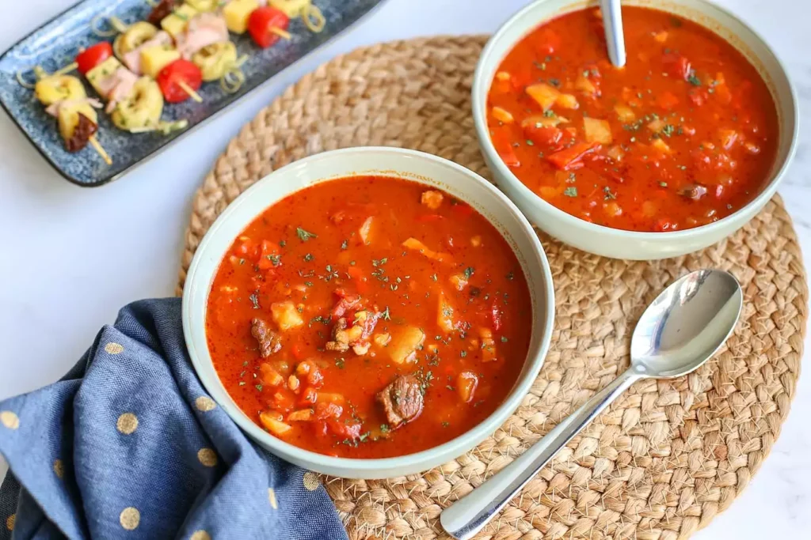

Ghoulashsoep

Ingredienten
- 250 gr runderriblappen
- 50 gr spekblokjes
- 100 gr vastkokende aardappels
- 2 parika's
- 0,5 rode peper
- 1 ui
- 1 teentje knoflook
- 500 ml runderbouillon
- 1 el tomatenpuree
- 250 gr tomatenblojes
- 2 tl paprikapoeder
- 1 tl karwijzaad
- 1 laurierblaadje
- snufje peper en zout
Bereiding
- Bak als eerste de spekblokjes ongeveer 2-3 minuten op middelhoog vuur
- Snijd ondertussen het vlees in blokjes en breng op smaak met peper en zout.
- Als de spek 2-3 minuutjes gebakken heeft voeg je de blokjes rundvlees toe en bak je die rondom bruin.
- Snipper de ui, snijd de paprika’s en aardappels in kleine blokjes, de halve rode peper in kleine stukjes en voeg toe aan de pan.
- Doe de kruiden erbij, pers een teentje knoflook boven de pan en bak alles nog ongeveer 5 minuutjes mee.
- Bak vervolgens de tomatenpuree een minuut mee voordat je de bouillon, tomatenblokjes en het laurierblaadje toevoegt.
- Deksel op de pan en dan kun je nu lekker gaan relaxen, want nu laat je de soep ongeveer 3 uur zachtjes pruttelen.
- De soep is klaar wanneer het vlees zo mals is dat het uit elkaar valt. De goulashsoep is een heerlijke goedgevulde maaltijdsoep.